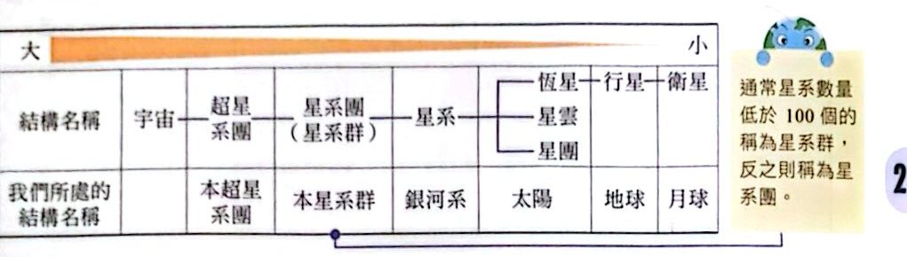
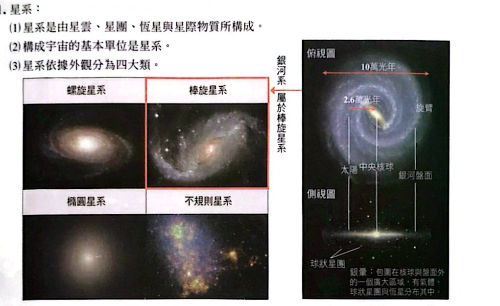
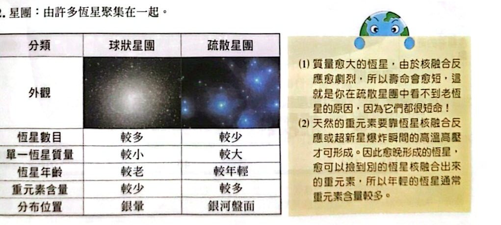
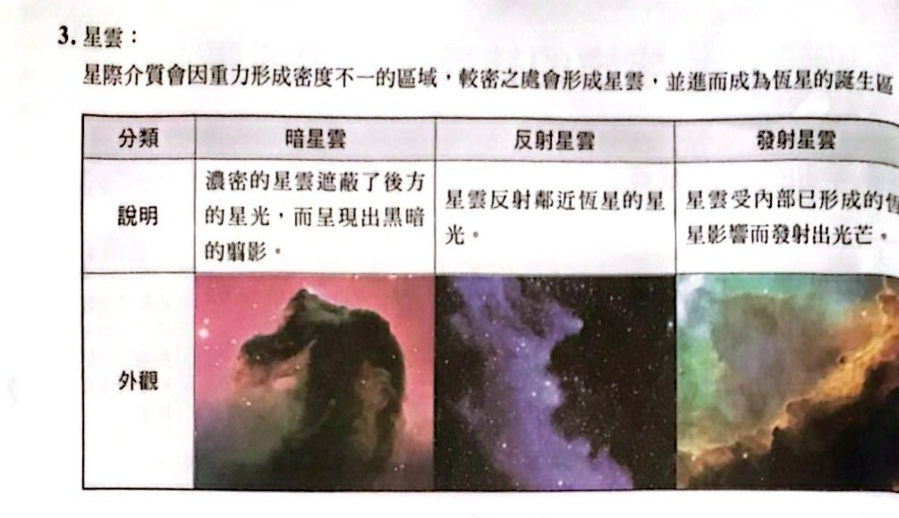
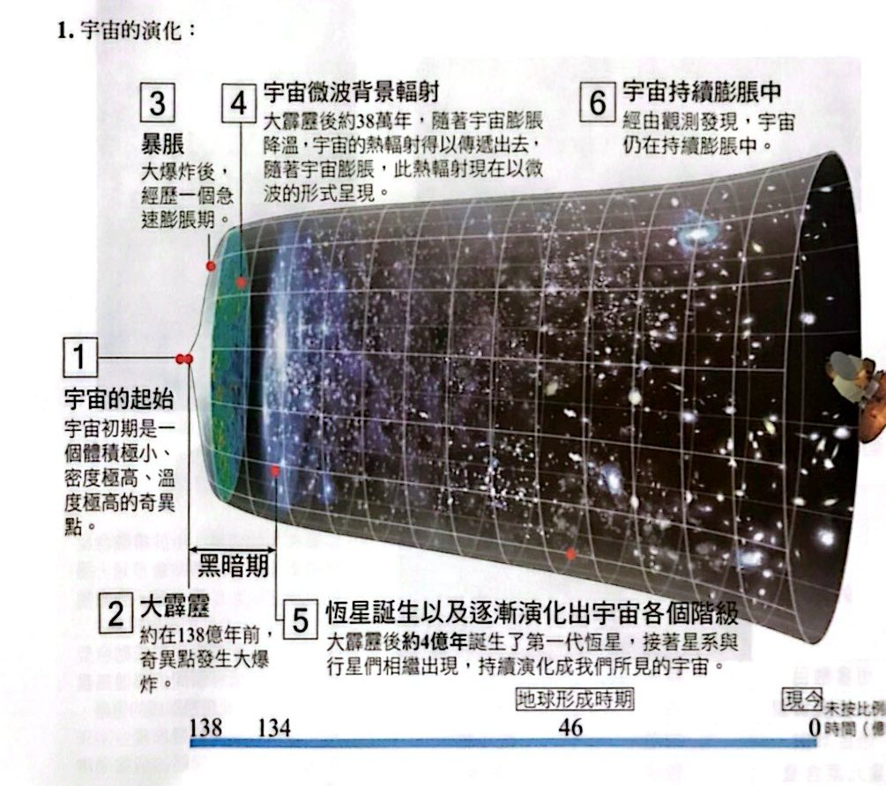
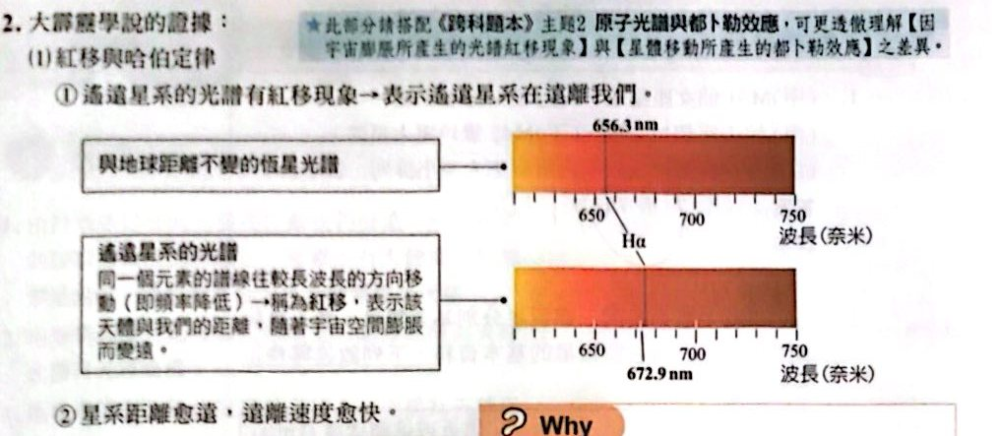
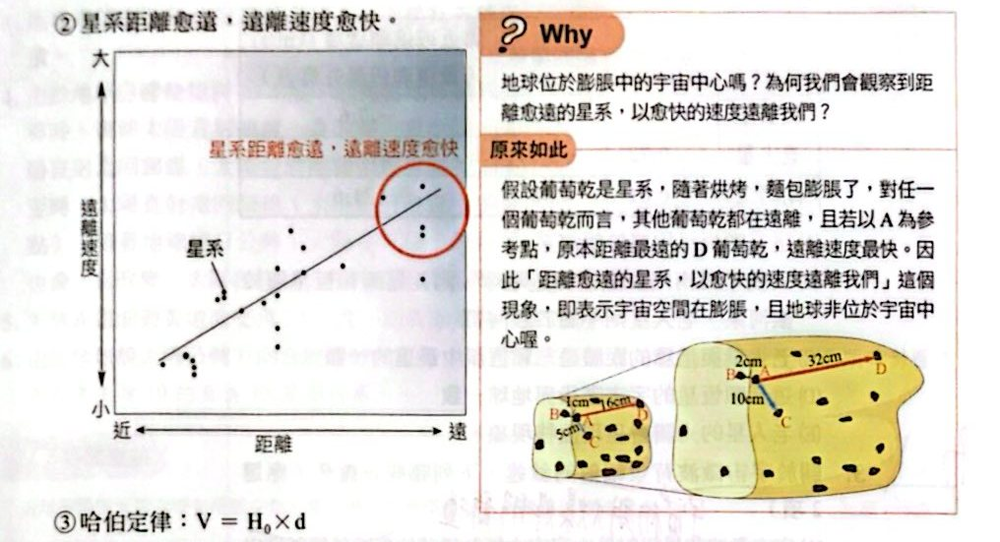
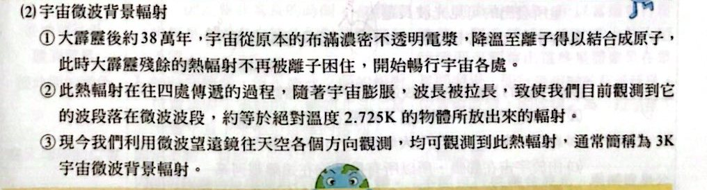

宇宙的結構與成員

宇宙的結構階級（講義 p.35）

星系的四種外觀與銀河系（講義 p.35）

球狀星團與疏散星團（講義 p.35）

暗星雲、反射星雲、發射星雲（講義 p.36）
宇宙起源與膨脹

宇宙的演化（講義 p.36）
大霹靂學說的證據

紅移現象（講義 p.37）

星系距離愈遠，遠離速度愈快；葡萄乾麵包比喻（講義 p.37）

宇宙微波背景輻射（講義 p.37）
小試身手
看答案與詳解收起
答丙 ＞ 乙 ＞ 甲 ＞ 丁 ＞ 戊
解這題在考什麼：宇宙結構階級。
- 丙 蛇夫座超星系團 ＞ 乙 室女座星系團 ＞ 甲 M31 仙女座星系 ＞ 丁 M42 獵戶座大星雲（銀河系內）＞ 戊 鹿林彗星（太陽系內）。
看答案與詳解收起
答(A)(C)
解這題在考什麼：m − M 愈大愈遠；光譜紅移＝遠離、藍移＝靠近。
| 星 |
m |
M |
m − M |
速度 |
| 天狼星 |
−1.47 |
1.42 |
−2.89 |
−7.6（靠近） |
| 老人星 |
−0.72 |
−5.71 |
＋4.99 |
20.5（遠離） |
| 南門二 |
−0.01 |
4.38 |
−4.39 |
−21.6（靠近） |
- (A) ○ 肉眼可見的恆星都屬於銀河系。
- (B) ✗ 靠近或遠離都不影響是否屬於銀河系；三顆都屬銀河系。
- (C) ○ 老人星 m − M 最大，距離最遠。
- (D) ✗ 恆星的宇宙階級與地球（行星）不同。
- (E) ✗ 老人星 ＋20.5 km/s 在遠離，光譜呈現紅移，不是藍移。
看答案與詳解收起
答(B)(C)
解這題在考什麼：宇宙微波背景輻射是大霹靂的餘溫。
- (A) ✗ 它是大爆炸初期殘留的熱輻射，不是由稀薄低溫氣體發出。
- (B) ○ 它在宇宙中存在的時間（約 138 億年）大於任何一顆恆星的年齡。
- (C) ○ 2.725 K ≈ −270°C，比南極年平均溫度還低。
- (D) ✗ 微波的波長比可見光長，不是短。
- (E) ✗ 從背景輻射可知宇宙初期溫度極高，後來因膨脹才降溫。
看答案與詳解收起
答(C)
解這題在考什麼：宇宙膨脹是星系之間的距離增大，但不是所有星系都遠離銀河系。
- (A) ○ 宇宙起源於高溫、高密度、體積小的奇異點。
- (B) ○ 約 138 億年前大爆炸。
- (C) ✗ 並非所有星系都遠離銀河系，鄰近的仙女座星系正在靠近（受重力作用）。
- (D) ○ 遙遠星系的光譜都有紅移。
- (E) ○ 距離銀河系愈遠的星系，遠離速度愈快（哈伯定律）。